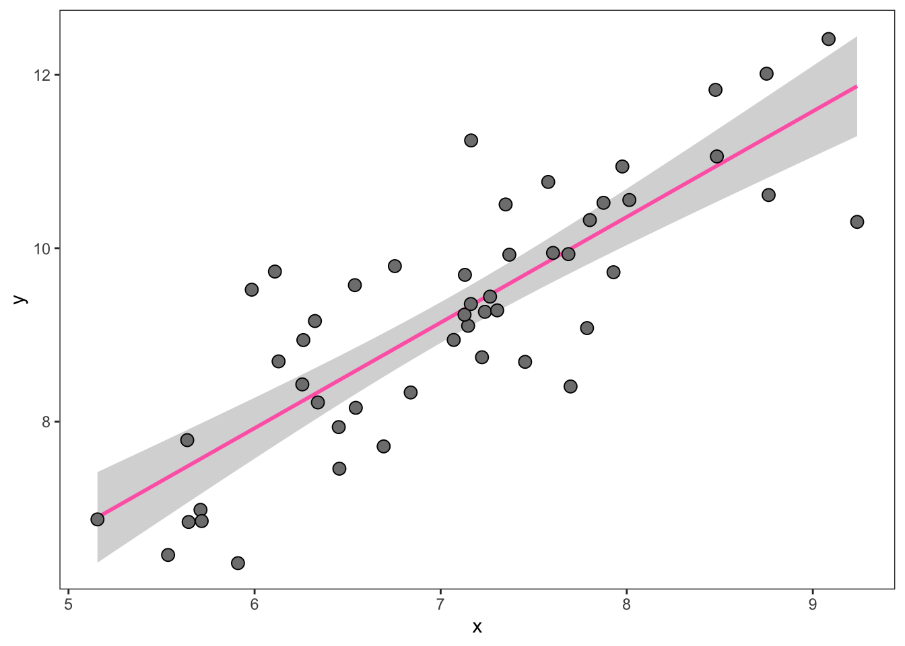
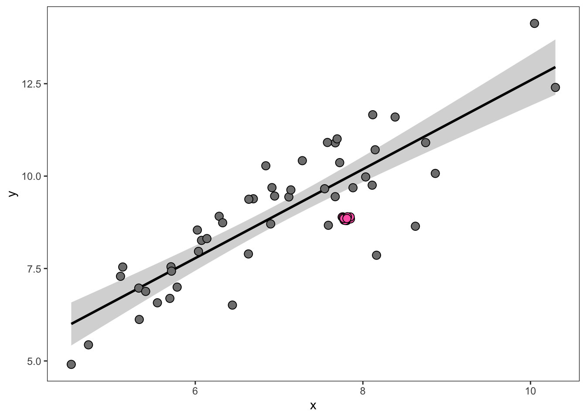
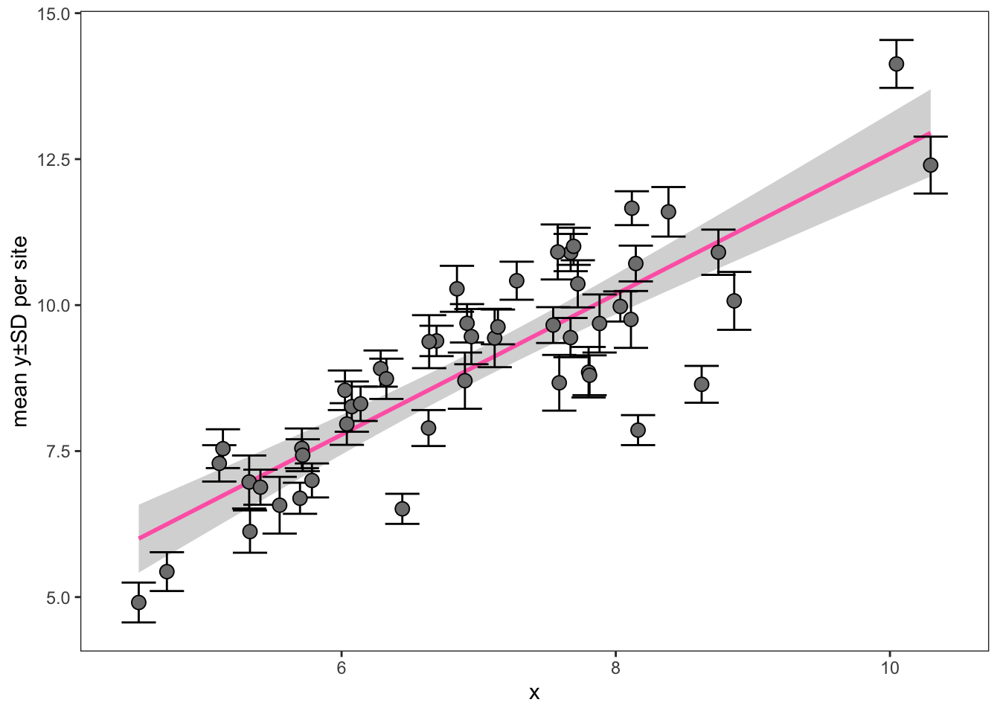
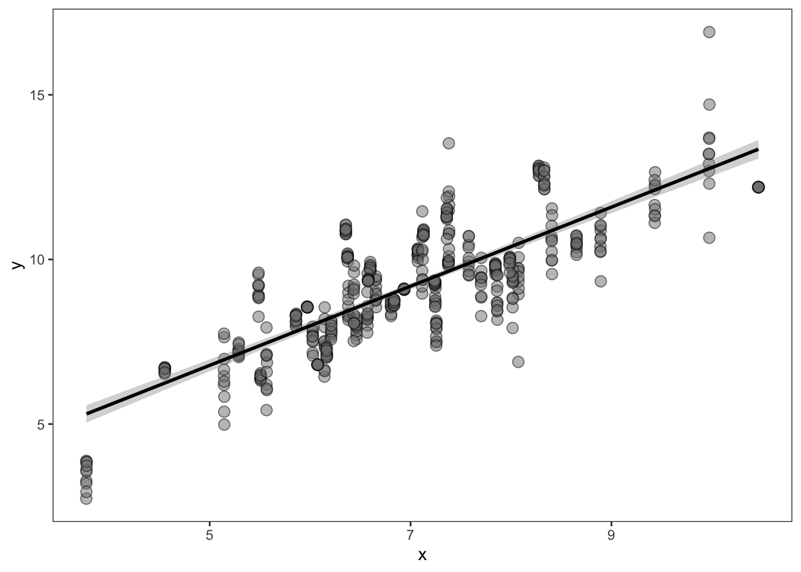
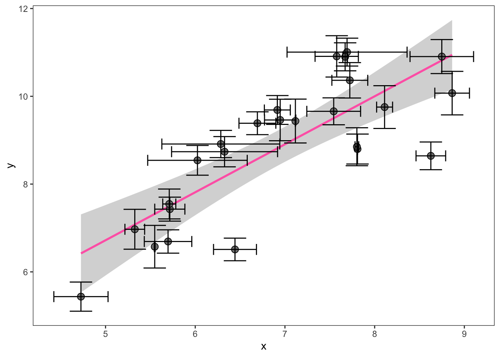
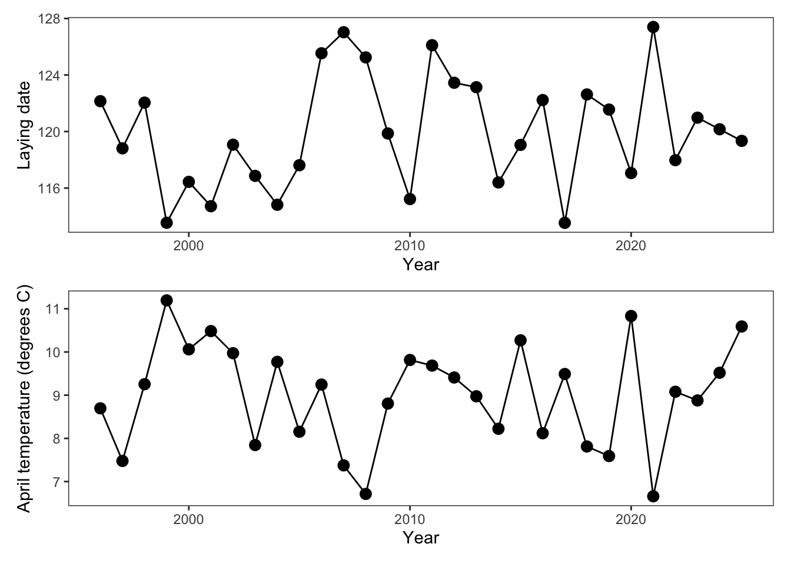
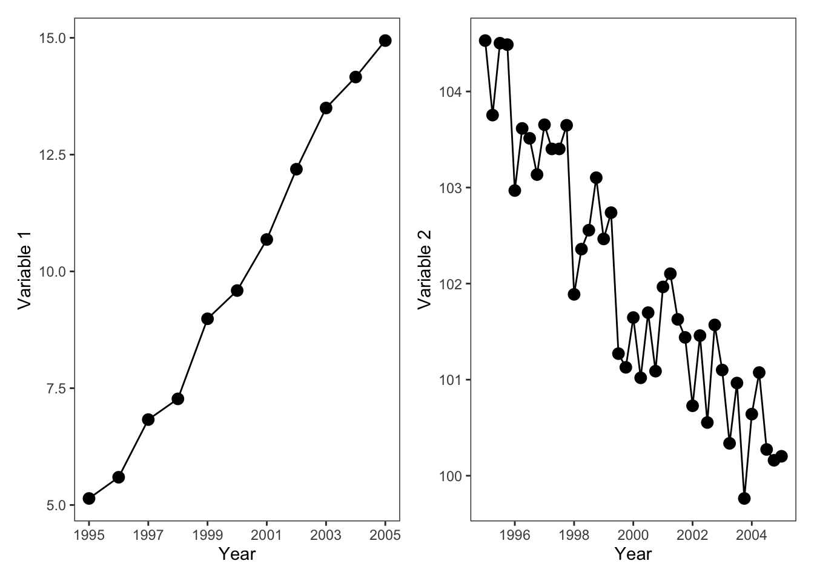
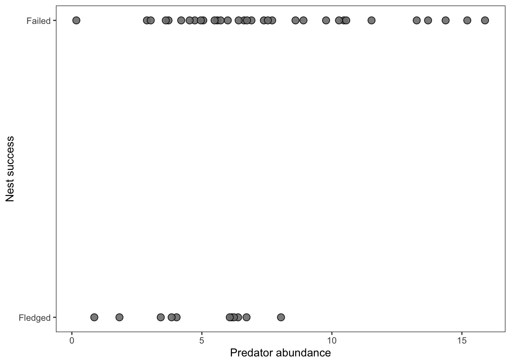
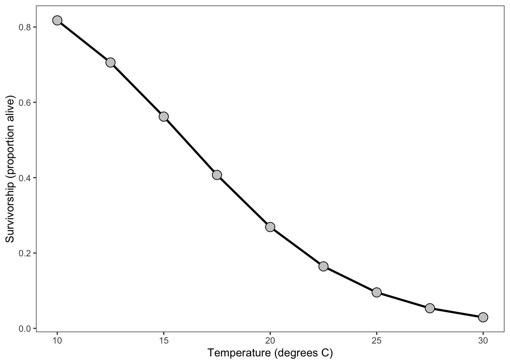
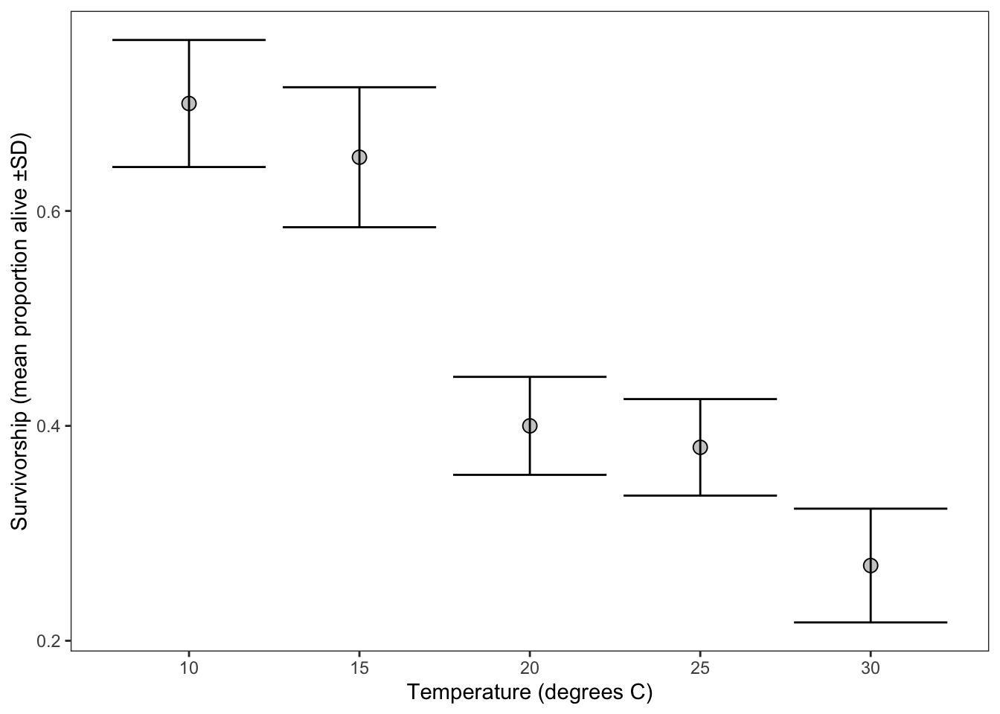

| correlation_id | x | y | r | n |
|---|---|---|---|---|
| corr_1 | 2.732521 | 4.005885 | NA | NA |
| corr_1 | 2.490387 | 3.787824 | NA | NA |
| corr_1 | 2.591366 | 3.466117 | NA | NA |
| corr_1 | 2.643710 | 4.986177 | NA | NA |
| corr_1 | 1.913894 | 4.764469 | NA | NA |
| corr_2 | NA | NA | 0.31 | 30 |
Extracting \(Z_r\): the correlation coefficient
Everything’s a spectrum, man
TEST
NoteKey points
-
\(Z_r\) is the Fisher’s z transformation of Pearson’s \(r\). Only Pearson’s r goes into
escalcdirectly; convert other correlation types first. - Many \(Z_r\) type data presentation formats include error bars. These can create issues with unit of replication. Data reconstruction techniques are possible but should be used with caution
- Other data types include relationships between continuous predictors and discrete responses, which require care but can be estimated with \(Z_r\) and converted to lnOR
- Calculating \(Z_r\) from non-independent correlation data, such as from pairwise matrices, requires additional care but is also described in detail.
\(Z_r\) describes correlations between a continuous predictor variable and a (generally) continuous response variable. \(Z_r\) is thus an important effect size in the meta-analyst tool kit, especially with observational data.
\(Z_r\) type data often takes the form of a scatterplot but other formats exist (e.g., matrices, time series, and model estimates). We’ll go through these examples in turn, along with solutions and limitations for extracting \(Z_r\) type data. We’ll start, however, by describing how to structure a database for \(Z_r\) type effect sizes.
Database design
In general, \(Z_r\) effect size extractions require a long-format database for data entry, where each row is one of the points in the corresponding analysis. This is because you will most likely be extracting individual points from scatterplot figures, instead of directly reported correlation coefficients (\(r\)).
This dataset will then be summarized in R to derive \(r\) (using cor.test) and sample size (\(n\)), producing a derived dataset with a single row per unique correlation. Be sure to have clear ID columns to help with summarization. Alternatively, you can calculate \(r\) and \(n\) while extracting data but this may lead to clunkiness in your workflow.
Note that some studies (though rarely in our experience) will report the raw correlation coefficients (\(r\)) and sample size (\(n\)), which will require a simpler data entry format (1 row per correlation coefficient). These can be entered into the same raw dataset or into a separate tab.
ImportantTypes of directly reported correlations
The \(Z_r\) effect size is based on a transformation of Pearson’s correlation coefficient (\(r\)). However, there are other correlation types. Spearman correlation is used for non-parametric correlation tests, Kendall for XXXXX, biserial for an artificially discretized predictor variable, and point-biserial for a truly discretized predictor variable.
Of these, it appears that all but point-biserial can be used to calculate \(Z_r\) without adjustment (Jacobs and Viechtbauer 2017). escalc has measure arguments directly designed to convert biserial correlations to \(Z_r\) (measure = "ZBIS").
Your dataset may look like this, with the first correlation (corr_1) represented as raw data extracted from a scatterplot and the second correlation (corr_2) entered directly as the correlation coefficient and sample size:
This will then be summarized in R to calculate the correlation coefficient \(r\) and sample size. We offer a helper function get_r that allows you to do this more succinctly:
get_r <- function(x, y){
out <- cor.test(x, y)
return(out$estimate)
}
# Summarize the raw correlation data:
dat.summarized <- dat %>%
filter(!is.na(x)) %>%
group_by(correlation_id) %>%
summarize(r = get_r(x, y),
n = n())
# Bind with the already summarized correlation data:
dat.final <- rbind(dat.summarized,
dat %>%
filter(!is.na(r)) %>%
select(-x, -y))
# Now calculate Zr:
dat.summarized <- escalc(measure = "ZCOR",
ri = r, ni = n,
data = dat.final)
knitr::kable(dat.summarized)| correlation_id | r | n | yi | vi |
|---|---|---|---|---|
| corr_1 | -0.3859909 | 5 | -0.4070804 | 0.500000 |
| corr_2 | 0.3100000 | 30 | 0.3205454 | 0.037037 |
You may also note below that there are methods to utilize mean ±error data in correlation coefficients. These would require additional columns and additional steps in R.
Feel free to download our database template, here:
Simple figures
This is the simplest type of correlation figure. In this case, you’d calibrate the x and y axes and extract each point. Then use cor.test in R to calculate the correlation coefficient:

Overplotting
But what if there is an ugly cluster of overlapping points?

If the total number of points is reported for the study, you can duplicate the values of the pink points as many times as it takes to match the total sample size. Otherwise, you’ll just have to digitize as many as you can and use a sample size that may be less than the real sample size (which makes the overall \(Z_r\) estimate more conservative—e.g., less weight in the model).
In the figure above, we could safely eyeball 5 separate points (though in reality there are 12).
Error bars
Single axis error bars
But what do you do if each point is actually a mean±SD?

Let’s imagine that each point is a site. Most researchers likely ignore the \(SD\) and calculate \(Z_r\) from the site means and number of sites, as follows:
head(dat) x y sd n
<num> <num> <num> <num>
1: 6.835348 6.777621 0.4643857 10
2: 6.006148 7.009790 0.3391786 10
3: 7.263167 9.731899 0.2513182 10
4: 7.598918 10.632717 0.4530599 10
5: 7.145446 8.584171 0.4681221 10
6: 5.063659 5.643530 0.3626755 10
yi vi
1 1.1225 0.0213 However, calculating \(Z_r\) this way treats site as the unit of replication. If the other studies in your dataset also treat site as the unit of replication, this is the best approach. However, if the rest of your data uses individuals or plots as the unit of replication you will end up with misaligned units of replication.
An alternative approach is to simulate the underlying data behind each site-level summary (i.e., the points in the scatterplot above). This can help align the units of replication with your dataset and ensure that studies with higher effort have more influence in your models. To do so:
Determine the internal sample size of each point, i.e., how many measurements were summarized to produce the means ± error.
Extract the means and error and convert error to \(SD\)
Use these statistics to draw random samples of of the data underlying each point from the appropriate statistical distribution (with the length of this sample equal to the internal sample size).
Note that this process can align the unit of replication of this data with the rest of your dataset. However, it also introduces a different issue: the individual observations are not equally independent (i.e., they’re clustered within each point). Luckily, there is a way to correct for this, which we’ll demonstrate below.
Here we’ll use rnorm to draw normally distributed data for each point. Note that it is also possible to draw data from other distributions (see here and here for a worked example with a \(Z_r\)-type effect size and the binomial distribution)
Warning
Note that reconstructing underlying data is an experimental method. Use carefully.
The first few rows of our extracted data looks like this, with an internal sample size of 10 measurements per site:
| x | y | sd | n |
|---|---|---|---|
| 6.835348 | 6.777621 | 0.4643857 | 10 |
| 6.006148 | 7.009790 | 0.3391786 | 10 |
| 7.263166 | 9.731899 | 0.2513182 | 10 |
| 7.598918 | 10.632717 | 0.4530599 | 10 |
| 7.145446 | 8.584171 | 0.4681221 | 10 |
| 5.063659 | 5.643530 | 0.3626755 | 10 |
In a loop, we draw data for each site:
[1] 500| y | x |
|---|---|
| 8.188113 | 6.835348 |
| 6.877546 | 6.835348 |
| 7.433110 | 6.835348 |
| 6.531770 | 6.835348 |
| 6.321059 | 6.835348 |
| 6.572654 | 6.835348 |
Warning
If the author-provided data presents standard error (or confidence intervals, etc) instead of standard deviation, remember that you absolutely must convert these to standard deviation before attempting to reconstruct the underlying distribution. See here on how to convert from other measures of error to standard deviation.
If you were to plot this reconstructed data, it would look like this:

In this example, each point had an internal sample size of 10 measurements. The reconstructed dataset therefore has 500 rows (50 sites times 10 measurements), but these rows are not fully independent. All measurements within a site share the site’s x value and the associated spatial or temporal clustering.
So how do we deal with the non-independence among these simulated observations?
We shrink the sample size with a design effect (see here) by calculating the intraclass correlation (ICC). This describes the amount of variation between sites rather than within sites. We estimate it from the scatter of the site means around the regression line and from the within-site SDs:
out <- cor.test(y_expanded$x, y_expanded$y)
fit <- lm(y ~ x, data = dat)
s2_w <- mean(dat$sd^2) # within-site variance
s2_b <- max(var(resid(fit)) - s2_w / mean(dat$n), 0) # between-site variance
icc <- s2_b / (s2_b + s2_w)
n_eff <- nrow(y_expanded) / (1 + (mean(dat$n) - 1) * icc) # effective n
n_eff[1] 57.31979The effective sample size became 57—much closer to the number of sites (50) than the total number of observations (500). If the standard deviations around each point had been larger, then effective sample size would be larger and further approach the number of individual measurements.
To calculate \(Z_r\), we calculate \(r\) from the expanded x and y variables:
# Now calculate 'r':
out <- cor.test(y_expanded$x, y_expanded$y)
r <- out$estimate
r cor
0.7886448 But instead of using 500 as our sample size in our call to escalc, we use our estimate of effective sample size:
escalc(measure = "ZCOR",
ri = out$estimate,
ni = n_eff)
yi vi
1 1.0678 0.0184 Compare this to our site-level \(Z_r\) estimates (n=50), that ignored the error bars:
site_mean_estimates
yi vi
1 1.1225 0.0213 You can see that sampling variance decreased and the point estimate shifted. You’ll also notice that in this example, the overall influence of simulating the underlying data had only minor influence on our estimates. Take that as you will. Regardless we think this is pretty neat.
x and y axis error bars
What do you do if there are also error bars on the x axis? For example, if each point is a mean±SD of two different measurements. This is common in field studies, where researchers may sample vegetation at a site and some other factor (e.g., animal activity or soil nutrients) and then present the means±SD of each site in a correlation.

In this case, the safest bet is likely to use the data as is, tagging the unit of replication as being site-level instead of measurement-level.
However, it is possible to simulate the data underlying these bivariate distributions (bivariate in that they concern correlated x and y measurements). This is, as above, an experimental data reconstruction technique. Use this only if your data is limited and you think it’s essential to glean as much data as possible.
Click here to see a full demonstration
In the table below, you’ll see the extracted mean values for the x and y variables (x, y), their standard deviations (x_sd, y_sd), and their internal sample sizes (x_n and y_n), which differ. To draw from a bivariate distribution we need to use a single sample size. To be conservative, we’ll use whichever sample size is smallest. We’ll then use mvrnorm in the R package MASS.
x y y_sd y_n x_sd x_n
<num> <num> <num> <num> <num> <num>
1: 6.835348 6.777621 0.4643857 10 0.13655035 20
2: 6.006148 7.009790 0.3391786 10 0.05417928 20
3: 7.263167 9.731899 0.2513182 10 0.41916233 20
4: 7.598918 10.632717 0.4530599 10 0.24139897 20
5: 7.145446 8.584171 0.4681221 10 0.09851552 20
6: 5.063659 5.643530 0.3626755 10 0.15615917 20# Choose the n with the lowest sample size:
dat[, n := min(c(x_n, y_n))]
# Specify `rho`, the correlation between x and y:
r <- 0.5
xy_expanded <- list()
for(i in 1:nrow(dat)){
# Create the correlation matrix between x and y:
sig <- matrix(
c(dat$x_sd[i]^2,
r * dat$x_sd[i] * dat$y_sd[i],
r * dat$x_sd[i] * dat$y_sd[i],
dat$y_sd[i]^2),
nrow = 2, ncol = 2, byrow = TRUE
)
# Draw from the multivariate normal distribution
xy_expanded[[i]] <- mvrnorm(n = dat$n[i],
mu = c(x = dat$x[i],
y = dat$y[i]),
Sigma = sig) |>
as.data.frame()
}
xy_expanded <- rbindlist(xy_expanded)
knitr::kable(head(xy_expanded))| x | y |
|---|---|
| 6.719042 | 6.197000 |
| 6.877434 | 6.967522 |
| 6.903659 | 7.488956 |
| 6.796989 | 6.330931 |
| 6.796533 | 7.120102 |
| 6.966849 | 7.154399 |
Our dataset went from 50 rows (one per point in the figure above) to 500 rows, given an internal N of 10 per point.
One issue with this approach is that, in ecology at least, it’s unlikely that the two bivariate distributions are the same. One might be a Beta distribution and the other negative binomial, etc. The normal distribution is unlikely to be the true data generating process (as assumed above).
However, if you do take this approach, the next step would be to calculate ICC and effective sample size (as above). And, as always, conduct sensitivity analyses!
Time series
Some observational type studies, especially in ecology, present multiple time series, which may include the two continuous variables you wish to correlate.
Imagine we have data for a bird. The great tit (Parus major), including its laying date (day of year) and mean April temperature over 30 years. We simulated these data for illustration, with the correlation fixed at r = -0.55 so the example can be reproduced:
n_years <- 30
years <- 1996:2025
# Simulated: April temperature and laying date with a fixed correlation of -0.55
r_target <- -0.55
z1 <- as.numeric(scale(rnorm(n_years)))
z2 <- as.numeric(scale(resid(lm(rnorm(n_years) ~ z1))))
z_laying <- r_target * z1 + sqrt(1 - r_target^2) * z2
tit <- data.table(year = years,
april_temp = 9 + 1.2 * z1, # mean April temperature (degrees C)
laying_date = 120 + 4 * z_laying) # laying date (day of year)Our running example is the great tit (Parus major): laying date (day of year) against mean April temperature over 30 years. We simulated these data for illustration, with the correlation fixed at r = -0.55 so the example can be reproduced:
n_years <- 30
years <- 1996:2025
# Simulated: April temperature and laying date with a fixed correlation of -0.55
r_target <- -0.55
z1 <- as.numeric(scale(rnorm(n_years)))
z2 <- as.numeric(scale(resid(lm(rnorm(n_years) ~ z1))))
z_laying <- r_target * z1 + sqrt(1 - r_target^2) * z2
tit <- data.table(year = years,
april_temp = 9 + 1.2 * z1, # mean April temperature (degrees C)
laying_date = 120 + 4 * z_laying) # laying date (day of year)
If the interval between measurements is identical (on x-axis), then these figures are straightforward to extract. You simply extract each point from each figure and then copy and paste the resulting columns next to each other so that they look like this:
| year | april_temp | laying_date |
|---|---|---|
| 1996 | 8.593083 | 120.4794 |
| 1997 | 7.926504 | 124.2383 |
| 1998 | 7.977365 | 124.6858 |
| 1999 | 8.013831 | 120.7780 |
| 2000 | 10.499180 | 122.6562 |
You can then calculate the correlation between Variable 1 and Variable 2, with \(n\) equal to the number of measurements.
Important
Note that in time series data, the correlation coefficient is calculated across temporal measurements and thus has a different internal non-independence structure than correlations calculated across independent sites, plots or individuals.
Consecutive years tend to resemble each other (autocorrelation), so n = 30 years carries less information than 30 independent sites would. Record this effect size as a time series, and consider using an effective sample size instead, as described by Pyper and Peterman (Pyper and Peterman 1998) and in 2.3. One optional extra step: if both series simply trend in the same direction over time, and that trend isn’t your question, remove it first. Detrend or first-difference both series, then correlate them and use the effective n. This example uses the raw n to show the basic calculation.
As previously mentioned, we recommend recording whether your effect sizes are summarized across time, space/individuals, or both throughout your meta-analysis.
Mismatched time series
However, what do you do if the time series are mismatched?
Below, we’ll plot two time series, one for Variable 1 and one for Variable 2:

What is the best way to line up variable 1 and variable 2 to calculate their correlation? While imputing the missing values in the second panel is one possible approach, it is the least conservative.
Instead, we recommend taking the average of the most frequently sampled variable to align with the less frequently sampled variable. Alternatively, you can filter the data (after aligning by the shared x-axis) to just those occassions where there is data for both series.
Aligning the data like this is tricky and will probably require manual merging based on nearest value in a spreadsheet software (e.g., Excel) after calibrating both the x and y axes.
Discrete responses
Discrete responses with a continuous predictor
Imagine you are conducting a meta-analysis concerned with factors driving nest success or failure in a seabird. Many of the studies use a discrete predictor, e.g., presence or absence of a predator. These types of data are naturally suited for lnOR or lnRR effect sizes.
However, other studies report mortality in relationship to the abundance of that predator—e.g., the continuous manifestation of presence/absence.

Depending on your meta-analysis question you may want to extract this data and calculate a \(Z_r\) correlation effect size, which can then be converted to lnOR (see here) and compared to your other lnOR discrete-predictor effect sizes. To do so, extract each point, which is an individual, and calculate \(Z_r\) with the responses as a binary variable of 0 or 1.
This conversion is safe because presence/absence is a discretized version of abundance and because the unit of replication is the number of nests (or individuals) in both cases and the conversion formulas assume that discrete variables are discretized or extreme ends of a continuous variable (which is true with presence and absence).
Regardless, care is still necessary. It’s unclear the extent to which calculating \(Z_r\) on binary outcomes can estimate the estimand of lnOR. A potentially safer option is to extract the raw data and fit a logistic regression of nest fate on predator abundance. The coefficient is the lnOR per unit of abundance. However, it’s unclear whether this can be compared to other lnOR’s in your dataset. This was an idea from Santi but I’m not sure it’s comparable.
Proportion data with a continuous predictor
You can imagine similar challenges where instead of 0 or 1 responses, the authors report % of a population:

You can calculate \(Z_r\) directly between the predictor (temperature, x-axis) and the proportion alive (the y axis), directly.
However, each location on the x-axis actually represents a population of individuals, all of whom were monitored to determine the proportion alive. As such, simply calculating \(Z_r\) directly from the proportion ignores population size and treats the number of surveys (or sites) as the unit of replication (n=10).
This can lead to a serious mismatch with the rest of your dataset—if the rest of your dataset is based the number of individuals as the unit of replication (like above)
To deal with this, the best option would be to convert the proportion data to binary response data based on the total number of individuals in each x-axis treatment—if this can be reconstructed from author reported summaries.
For example, if this figure reflects an experiment where each temperature treatment had 15 individuals, then you can multiply the survivorship at each temperature level by 15, and then expand this dataset to have a 0 or 1 for all 15 individuals per temperature treatment. Because each count is deterministic (rounded from the proportion), there is no added random noise.
Let’s give it a try. dt is a data.table with a column for proportion alive and for temperature. We’ll calculate the number of living and dead individuals, make the dataset long so that these are in one column, and then duplicate the dataset to be one row per individual. Finally, we’ll create a binary column of 0s and 1s:
temperature proportion_alive number_alive number_dead
<num> <num> <num> <num>
1: 10.0 0.8175745 12 3
2: 12.5 0.7057850 10 5
3: 15.0 0.5621765 8 7
4: 17.5 0.4073334 6 9
5: 20.0 0.2689414 4 11
6: 22.5 0.1645165 2 13 temperature proportion_alive status n_individuals
<num> <num> <fctr> <num>
1: 10.0 0.8175745 number_alive 12
2: 12.5 0.7057850 number_alive 10
3: 15.0 0.5621765 number_alive 8
4: 17.5 0.4073334 number_alive 6
5: 20.0 0.2689414 number_alive 4
6: 22.5 0.1645165 number_alive 2[1] 135| temperature | proportion_alive | living |
|---|---|---|
| 10 | 0.8175745 | 1 |
| 10 | 0.8175745 | 1 |
| 10 | 0.8175745 | 1 |
| 30 | 0.0293122 | 0 |
| 30 | 0.0293122 | 0 |
| 30 | 0.0293122 | 0 |
We have now expanded this dataset from 9 rows (one per temperature treatment) to 135 rows (one per individual), and we have shifted the unit of replication from number of temperature treatments to number of individuals.
We can now calculate a correlation coefficient and \(Z_r\) effect size:
yi vi
-0.679413208 0.007575758 This can be converted to lnOR for comparability. Note that since the individuals within each temperature treatment might be correlated, treat this reconstruction with some degree of caution and be sure that this data does not unduly influence your results.
Mean±SD proportion data with continuous predictor {#sec-\(Z_r\)-reconstructing-proportion-data}
Now let’s look at a similar situation, except the figure is presenting mean±SD mortality across separate trials within each temperature treatment.

The default in this situation is to calculate \(Z_r\) on the treatment means, with a site/experiment level unit of replication, with n equal to the number of temperature treatments (5). This may be difficult to compare to effect sizes (presumably lnOR) calculated with individual-level unit of replication.
Note
This may be a situation that calls single-group effect sizes that use temperature as a moderator in a metaregression. See our page here.
However, if we want our unit of replication to be based on the number of individuals, we could alternatively reconstruct the underlying distributions behind each of these summarized trials. This will allow us to calculate a correlation across individuals for the binary response of being alive or dead, instead of across the mean per trial.
Note
A similar data structure could occur with discrete outcomes per plot instead of individuals with the number of sites/islands interchangeable with the number of trials.
An example would be the number of plots occupied by a species (the discrete outcome) per study site (the trial), which are sampled across some continuous gradient of interest.
To do this, we use the binomial or beta-binomial distribution instead of the normal distribution. The design effect (see 3.3) corrects the sample size for the clustering of individuals within trials. To do so we need to determine, from the text, the number of individuals and the number of trials (or sites, plots, etc) that the mean±sd were calculated from.
Note
A similar data structure could occur with discrete outcomes per plot instead of individuals with the number of sites/islands interchangeable with the number of trials.
An example would be the number of plots occupied by a species (the discrete outcome) per study site (the trial), which are sampled across some continuous gradient of interest.
Since this type of data reconstruction is experimental, use with caution, flag, and conduct sensitivity analyses.
Click here for a full demonstration
To understand whether to use the binomial or beta-binomial distribution, we check whether the observed (author-reported) standard deviation is greater than the theoretical standard deviation of the binomial distribution, which is defined by the proportion and the number of individuals per trial.
[1] 0It looks like the reported standard deviations are all less than or equal to the theoretical standard deviation of the binomial family. So we can use the binomial distribution. Here we use fixed (deterministic) counts rather than random draws: the number alive in each treatment is round(proportion_alive * N), where N is the total number of individuals in that treatment (n_individuals * n_trials). W
hy not random draws? They add simulation noise about as large as the sampling error itself, and they give a different answer every time you run the code. See here for the equations and a fuller description, as well as how to generate data for beta-binomial distributed data (when \(sd_{reported} > sd_{theoretical}\)).
Warning
Note that reconstructing underlying data is an experimental method. Use carefully.
dt[, n_total := n_individuals * n_trials] # individuals per treatment
dt[, n_alive := round(proportion_alive * n_total)] # deterministic counts
dt[, n_dead := n_total - n_alive]
# Design effect from the reported SD (within-trial clustering), floored at 0:
dt[, rho := pmax((n_individuals * sd^2 / (proportion_alive * (1 - proportion_alive)) - 1) /
(n_individuals - 1), 0)]
dt[, deff := 1 + (n_individuals - 1) * rho]
dt[, .(temperature, n_total, n_alive, n_dead, rho, deff)] temperature n_total n_alive n_dead rho deff
<num> <num> <num> <num> <num> <num>
1: 10 60 42 18 0 1
2: 15 60 39 21 0 1
3: 20 60 24 36 0 1
4: 25 60 23 37 0 1
5: 30 60 16 44 0 1Now we expand the counts to one row per individual with a binary outcome of living or dead:
[1] 300| temperature | living |
|---|---|
| 10 | 1 |
| 10 | 1 |
| 10 | 1 |
| 10 | 1 |
| 10 | 1 |
| 30 | 0 |
| 30 | 0 |
| 30 | 0 |
| 30 | 0 |
| 30 | 0 |
This final dataset has 300 rows, one for each individual, with number of individuals as the nominal unit of replication. Because individuals within a trial are correlated, we divide the sample size by the mean design effect (1) before calculating Zr:
Non-independent correlations
Matrices
Some types of correlations are more complicated because they are based on pairwise matrices that describe relationships between individuals. As such, each value is not independent because the same individuals engaged with other individuals.
For instance, correlations between pair-wise behaviors. An example would be the relationship between grooming behavior and defense, which was meta-analyzed by Schino (2007). Is grooming adaptive because it leads to mutual defense with grooming partners?
With data like this, you might have a directed matrix of grooming between individuals, and a second matrix of defense between the same individuals. Here we simulate 10 individuals, with defense correlated with grooming:
| NA | 85.3 | 90.8 | 61.3 |
| 69.7 | NA | 80.2 | 53.5 |
| 8.9 | 19.2 | NA | 96.4 |
| 15.8 | 62.1 | 43.5 | NA |
Each off-diagonal cell is a directed dyad. Because the grooming matrix is directed, we use both triangles, so every off-diagonal value enters the calculation. We melt the two matrices into vectors of aligned dyads:
[1] 90Now calculate Kendall’s correlation across the dyads and convert it to a Pearson-equivalent r with \(r = \sin(\pi\tau/2)\) before calculating Zr. The sample size is the number of individuals, not the number of dyads:
yi vi
1 1.5162 0.1429 The dyads share individuals, so they are not independent, and the standard error above is only a first approximation. If the paper reports a Mantel or QAP test (permutation tests built for matrix correlations), you can use its p-value to back-calculate a standard error.
You may also see rcalc suggested for non-independent correlations. It’s meant for a different problem: several correlations measured on the same individuals (see 2.3). It doesn’t fix the non-independence of dyads within a single matrix.
Model estimates
Correlations are often reported as test statistics rather than as r. You can convert these to r, and then to Zr, with the following relations (see Chapter 4 for the full set of conversions):
| Reported statistic | Conversion to r | Notes |
|---|---|---|
| t (simple regression or two-group t, df = n - 2) | \(r = \frac{t}{\sqrt{t^2 + df}}\) | Sign follows the t statistic. |
| F(1, df_error) | \(r = \sqrt{\frac{F}{F + df_{error}}}\) | Only for a single numerator degree of freedom; take the sign from the slope. |
| R-squared | \(|r| = \sqrt{R^2}\) | Only for a single-predictor model; take the sign from the slope. |
| Standardized slope or unstandardized slope | \(r = b\, s_x / s_y\) | Needs the standard deviations of both variables. |
| Chi-square (2 x 2 table, phi) | \(\phi = \sqrt{\chi^2_1 / N}\) | A different estimand from Pearson r; flag it. |
| t for one predictor in a multiple regression | \(r_p = \frac{t}{\sqrt{t^2 + df}}\), with \(df = n - k - 1\) | This is a partial correlation, so use ZPCOR (below). |
I don’t think the R2 is correct…. or the multiple regression?
For a simple regression or two-group t, the conversion gives r directly:
yi vi
1 0.4564 0.0370 For a predictor in a multiple regression, the t statistic gives a partial correlation. Use ZPCOR with the number of predictors (mi):
escalc(measure = "ZPCOR", ti = 2.5, ni = 32, mi = 2)
yi vi
1 0.4490 0.0357 ….
NOTES/Questions:
“For meta-analyses involving multiple (dependent) correlation coefficients extracted from the same sample, see also the rcalc function.” <- from escalc documentation
rcalc: “Function to calculate the variance-covariance matrix of correlation coefficients computed based on the same sample of subjects.” Ooof. This is another dimension of complexity….Is this what should be used for the Matrices??
References
Jacobs, P., and W. Viechtbauer. 2017. Estimation of the biserial correlation and its sampling variance for use in meta-analysis. Research Synthesis Methods 8:161–180.
Pyper, B. J., and R. M. Peterman. 1998. Comparison of methods to account for autocorrelation in correlation analyses of fish data. Canadian Journal of Fisheries and Aquatic Sciences 55:2127–2140.
Schino, G. 2007. Grooming and agonistic support: A meta-analysis of primate reciprocal altruism. Behavioral Ecology 18:115–120.